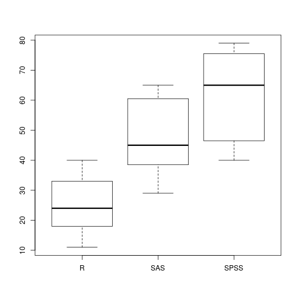

Diferencias de Medias
Dos medias y $k$ medias, con supuestos.
Valentín Vergara Hidd
Uso de Software en Investigación Social
Comparar grupos.
En estas sesiones vamos a trabajar en comparaciones de medias. En términos generales, trabajaremos con variables dependientes \(Y\): \[ Y \in \mathbb{R} \; | \; \infty^{-} < Y < \infty^{+}\] y con variables independientes \(X\): \[ X \in \mathbb{Z} \; | \; \infty^{-} < Y < \infty^{+}.\]
Asumimos además que \(\mu\) corresponde a la media artimética poblacional y \(\sigma^{2}\) a la varianza de la población.
Datos para esta clase.
Datos simulados: fumadores
Vamos a simular datos sobre la edad de muerte de un grupo de 35 personas, jun to con optras características relevantes.
fumadores<-data.frame(id = 1:36,
edad_muerte = c(sample(70:90,18,replace = TRUE), sample(60:80, 18,
replace = TRUE)),
fuma = c(rep("No", 18), rep("Sí",18)),
sexo = sample(c("Hombre", "Mujer"), 36, replace = TRUE))
head(fumadores, 5)
## id edad_muerte fuma sexo
## 1 1 85 No Mujer
## 2 2 85 No Hombre
## 3 3 87 No Hombre
## 4 4 76 No Mujer
## 5 5 82 No Mujer
Datos simulados: bebedores
Simularemos ahora los datos sobre la cantidad de tragos por semana que bebían 2581 personas antes y después de un experimento en el que se les sometía a un programa de erducación sobrer los efectos del alcohol. Se midió también su editorial preferida de comics.
bebedores<-data.frame(id = 1:2581,
editorial = sample(c("Marvel", "DC"), 2581, replace = TRUE),
grupo = c(rep("Tratamiento", 1200), rep("Control", 1381)),
tragos_pre = rpois(2581,10),
tragos_post = c(rpois(1200, 7), rpois(1381,10)))
head(bebedores,5)
## id editorial grupo tragos_pre tragos_post
## 1 1 DC Tratamiento 16 9
## 2 2 Marvel Tratamiento 15 10
## 3 3 Marvel Tratamiento 4 6
## 4 4 Marvel Tratamiento 12 7
## 5 5 DC Tratamiento 8 6
Datos simulados para ANOVA.
Se recolectaron datos para 60 usuarios de software estadístico. Se registraron escalas de facilidad de uso, flexibilidad de análisis y actualización de procedimientos.
software<-data.frame(id = 1:60,
software = c(rep("R", 20), rep("SAS", 20), rep("SPSS", 20)),
facilidad = c(sample(10:40, 20, replace = T),
sample(25:65, 20, replace = T), sample(40:80, 20, replace = T)),
flexibilidad = c(sample(50:85, 20, replace = T),
sample(30:60, 20, replace = T), sample(10:35, 20, replace = T)),
actualizacion = c(sample(50:100, 20, replace = T),
sample(20:60, 20, replace = T), sample(20:60, 20, replace = T)))
Para comprobar el dataframe creado:
str(software)
## 'data.frame': 60 obs. of 5 variables:
## $ id : int 1 2 3 4 5 6 7 8 9 10 ...
## $ software : Factor w/ 3 levels "R","SAS","SPSS": 1 1 1 1 1 1 1 1 1 1 ...
## $ facilidad : int 27 31 23 36 17 30 11 23 23 38 ...
## $ flexibilidad : int 65 70 83 61 73 76 57 65 69 63 ...
## $ actualizacion: int 62 84 69 54 86 100 85 71 77 77 ...
Datos reales: Simce 2016
Leeremos el archivop [simce4_2016.xlsx], que pueden descargar de INFODA. Son los datos reales, para cada establecimiento, de sus puntajes para 4º Básico en Lectura y Matemática, además de otras variables.
library(readxl)
simce<-read_excel("./simce4_2016.xlsx")
simce$dependencia<-factor(simce$dependencia, levels = c(1,2,3),
labels = c("Municipal", "Particular Subvencionado", "Particular"))
simce$gse<-factor(simce$gse, levels = c(1,2,3,4,5),
labels = c("Bajo", "Medio Bajo", "Medio", "Medio Alto", "Alto"))
simce$rural<-factor(simce$rural, levels = c(1,2),
labels = c("Urbano", "Rural"))
Posteriormente, comprobamos las variables recodificadas:
head(simce)
## # A tibble: 6 x 10
## rbd region comuna dependencia gse rural nalu_lect nalu_mat
## <dbl> <dbl> <chr> <fctr> <fctr> <fctr> <dbl> <dbl>
## 1 5 15 ARICA Municipal Medio Urbano 26 28
## 2 8 15 ARICA Municipal Medio Bajo Urbano 2 2
## 3 9 15 ARICA Municipal Medio Urbano 26 28
## 4 10 15 ARICA Municipal Medio Bajo Urbano 2 2
## 5 11 15 ARICA Municipal Medio Bajo Urbano 2 2
## 6 12 15 ARICA Municipal Medio Bajo Urbano 26 28
## # ... with 2 more variables: lect <dbl>, mat <dbl>
Diferencias de dos medias
Muestras independientes.
Supuestos.
Variable dependiente normalmente distribuida
Asumimos que la variable dependiente tiene una distribución similar a la normal en ambos niveles de la variable independiente. A pesar de esto, la prueba T es robusta para desviaciones de la distribución normal, únicamente si se garantiza que: \[ \frac{n_{mayor}}{n_{menor}} \leq 1,5\]
Homocedasticidad.
Las varianzas de ambos grupos son iguales. En caso de no cumplirse este supuesto, se pueden hacer algunas correcciones que vienen incluidas en la función del test.
Error Estándar.
Recordemos que para la variable aleatoria \(X\), la varianza de su distribución de muestreo equivale a: \[ \hat{\sigma}^{2}_{\overline{X}} = \frac{\sigma^{2}}{n}\] De esta forma, la diferencia entre dos grupos tiene el siguiente error estándar \[ \hat{\sigma}_{\overline{X}_{2}- \overline{X}_{1}} = \sqrt{\hat{\sigma}^{2}_{\overline{X}}} = \sqrt{\frac{\sigma^{2}_{1}}{n_{1}} + \frac{\sigma^{2}_{2}}{n_{2}}}\] Estas medidas son relevantes para construir los intervalos de confianza.
Ejemplo: fumadores
Verificando supuestos.
Para conocer si una variable distribuye normal, utilizaremos el test shapiro-wilk
shapiro.test(fumadores$edad_muerte)
##
## Shapiro-Wilk normality test
##
## data: fumadores$edad_muerte
## W = 0.94279, p-value = 0.06209
La variable aparentemente es normal, pero debemos asegurarnos que lo sea para cada nivel de la variable [fuma]
tapply(fumadores$edad_muerte, fumadores$fuma, shapiro.test)
## $No
##
## Shapiro-Wilk normality test
##
## data: X[[i]]
## W = 0.91635, p-value = 0.1114
##
##
## $Sí
##
## Shapiro-Wilk normality test
##
## data: X[[i]]
## W = 0.89792, p-value = 0.05287
Si no obtenemos normalidad, podemos verificar el ratio entre el \(n\) de ambos grupos:
length(fumadores$fuma[fumadores$fuma=="Sí"])/length(fumadores$fuma[fumadores$fuma=="No"])
## [1] 1
Homocedasticidad.
Para verificar este supuesto, utilizamos la prueba de Bartlett, cuya hipótesis nula es: \[ H_{0}: \; \sigma^{2}_{fuma} - \sigma^{2}_{no\; fuma} = 0 \]
bartlett.test(fumadores$edad_muerte~fumadores$fuma)
##
## Bartlett test of homogeneity of variances
##
## data: fumadores$edad_muerte by fumadores$fuma
## Bartlett's K-squared = 1.7797, df = 1, p-value = 0.1822
T-test
La hipótesis nula es: \[ H_{0}: \; \overline{Y}_{fuma} - \overline{Y}_{no\; fuma} = 0 \] Veamos primero los promedios de edad de muerte para ambos grupos:
tapply(fumadores$edad_muerte, fumadores$fuma, mean)
## No Sí
## 79.44444 68.61111
Al parecer, la diferencia no es cero.
Probemos que esta diferencia efectivamente es distinta de cero.
t.test(edad_muerte~fuma, data = fumadores, var.equal=TRUE)
##
## Two Sample t-test
##
## data: edad_muerte by fuma
## t = 5.2667, df = 34, p-value = 7.741e-06
## alternative hypothesis: true difference in means is not equal to 0
## 95 percent confidence interval:
## 6.653071 15.013596
## sample estimates:
## mean in group No mean in group Sí
## 79.44444 68.61111
Alternativa no-paramétrica.
Si no logramos cumplir el primer supuesto, ya sea porque la variable no distribuye normal, o porquer la razón entre el tamaño de ambos grupos es mayor a 1,5; se puede utilizar una prueba no-paramétrica.
La prueba de Mann Whitney compara medianas con la siguiente hipótesis nula: \[ H_{0}: \; Y_{fuma} - Y_{no\; fuma} = 0 \]
La función en R:
wilcox.test(edad_muerte~fuma, data=fumadores)
## Warning in wilcox.test.default(x = c(85L, 85L, 87L, 76L, 82L, 86L, 78L, :
## cannot compute exact p-value with ties
##
## Wilcoxon rank sum test with continuity correction
##
## data: edad_muerte by fuma
## W = 281, p-value = 0.0001734
## alternative hypothesis: true location shift is not equal to 0
Muestras dependientes
Lógica experimental.
Una prueba de diferencia de medias para muestras dependientes considera una lógica experimental, dado que compara a cada individuo consigo mismo en un tiempo previo. Considere una variable aleatoria \(X\) en un tiempo \(t\) (medición final), lo que se estima es la siguiente diferencia. \[ \overline{X}_{t} - \overline{X}_{t-1} \] Obviamente, se puede estimar una diferencia con un lag mayor a 1, pero como se trata de diferencias de dos medias, siempre se trabajará con dos puntos temporales.
La función en R.
Consideremos el dataframe [bebedores], que simula los resultados de un tratamiento que busca disminuir la cantidad de tragos por semana de un grupo de personas. Debemos asegurarnos que al inicio, los grupos estén balanceados:
t.test(tragos_pre~grupo, data = bebedores)
##
## Welch Two Sample t-test
##
## data: tragos_pre by grupo
## t = -0.19854, df = 2508.3, p-value = 0.8426
## alternative hypothesis: true difference in means is not equal to 0
## 95 percent confidence interval:
## -0.2721842 0.2221347
## sample estimates:
## mean in group Control mean in group Tratamiento
## 9.884142 9.909167
Noten que acabamos de hacer una prueba de muestras independientes, que arrojó que al comienzo del experimento, los grupos están balanceados. Veamos ahora sí en términos generales, existe un efecto del tratamiento en la cantidad de tragos por semana.
t.test(bebedores$tragos_post,bebedores$tragos_pre, paired = TRUE)
##
## Paired t-test
##
## data: bebedores$tragos_post and bebedores$tragos_pre
## t = -15.456, df = 2580, p-value < 2.2e-16
## alternative hypothesis: true difference in means is not equal to 0
## 95 percent confidence interval:
## -1.576133 -1.221232
## sample estimates:
## mean of the differences
## -1.398683
Los resultados indican que en promedio, el tratamiento hace que la población general disminuya en 1,3 tragos por semana.
Si se quiere, una interpretación de los resultados que utilice el intervalo de confianza, es que la población general disminuye entre 1,5 y 1,2 tragos por semana.
Podemos ser más específicos, replanteando la hipótesis alternativa, si tenemos evidencia suficiente para postular una hipótesis direccional. En este caso: \[ H_{0}:\; \overline{Y}_{POST} - \overline{Y}_{PRE} = 0\] \[ H_{0}:\; \overline{Y}_{POST} - \overline{Y}_{PRE} < 0\]
Esta hipótesis se ve reflejada en la función:
t.test(bebedores$tragos_post, bebedores$tragos_pre, paired = TRUE, alternative = "less")
##
## Paired t-test
##
## data: bebedores$tragos_post and bebedores$tragos_pre
## t = -15.456, df = 2580, p-value < 2.2e-16
## alternative hypothesis: true difference in means is less than 0
## 95 percent confidence interval:
## -Inf -1.249778
## sample estimates:
## mean of the differences
## -1.398683
Este resultado indica que la diferencia entre los tragos pre y post es como mínimo 1,2. Dicho de otra forma, en promedio, el tratamiento disminuye como mínimo en 1,2 tragos por semana.
Alternativa no-paramétrica.
La función es similar que para muestras independientes, sólo que se agrega el argumento paired.
wilcox.test(bebedores$tragos_post, bebedores$tragos_pre, paired = TRUE)
##
## Wilcoxon signed rank test with continuity correction
##
## data: bebedores$tragos_post and bebedores$tragos_pre
## V = 914940, p-value < 2.2e-16
## alternative hypothesis: true location shift is not equal to 0
Este resultado muestra una diferencia estadísticamente significativa entre la medición pre y la medición post. Como se observa, la conclusión es menos precisa, pero esto se compensa con que las ocasiones en que se aplica esta prueba son mucho más restrictivas que cuando se utiliza la alternativa paramétrica.
Diferencias entre \(k\) medias.
Una idea relevante.
Si queremos comparar los valores promedio de los \(k\) niveles de una variable \(Y\), ¿por qué no hacemos \(\binom{k}{2}\) comparaciones utilizando pruebas T?
Supongamnos el caso más simple, una variable con tres niveles: \[ x \in \{x_{1}, x_{2}, x_{3} \}\]
Podríamos hacer las siguientes comparaciones:
- \(H_{0}: \; \overline{X}_{1} - \overline{X}_{2} = 0\)
- \(H_{0}: \; \overline{X}_{2} - \overline{X}_{3} = 0\)
- \(H_{0}: \; \overline{X}_{1} - \overline{X}_{3} = 0\)
El problema dsel enfoque anterior.
Si cada una de estas comparaciones se realiza con un 95% de confianza; y asumimos que son independientes entre sí, el nivel de confianza de la prueba será: \[ 0,95 \times 0,95 \times 0,95 = 0,95^3 = 0,857375\]
Por tanto, la probabilidad de cometer un error tipo I es: \[ 1 - 0,95^3 = 0,142625 \]
De esta forma, si hacemos comparaciones múltiples, en lugar de trabajar con un máximo de 5% de rechazar kla hipótesis nula, trabajamos con un 14,26%.
Supuestos de la prueba de análisis de varianza.
Homocedasticidad
Al igual que para dos medias, se puede verificar este supuesto con una prueba de Bartlett.
bartlett.test(software$facilidad, software$software)
##
## Bartlett test of homogeneity of variances
##
## data: software$facilidad and software$software
## Bartlett's K-squared = 4.7845, df = 2, p-value = 0.09142
Las distribuciones de la variable dependiente para los \(k\) grupos son normales.
by(software$facilidad, software$software, shapiro.test)
## software$software: R
##
## Shapiro-Wilk normality test
##
## data: dd[x, ]
## W = 0.95679, p-value = 0.4819
##
## --------------------------------------------------------
## software$software: SAS
##
## Shapiro-Wilk normality test
##
## data: dd[x, ]
## W = 0.90106, p-value = 0.04316
##
## --------------------------------------------------------
## software$software: SPSS
##
## Shapiro-Wilk normality test
##
## data: dd[x, ]
## W = 0.86642, p-value = 0.01017
La prueba ANOVA.
Consideremos el mismo ejemplo anterior, cuya hipótesis nula es: \[H_{0}: \; \overline{Y}_{R} = \overline{Y}_{SAS} = \overline{Y}_{SPSS}\] Para facilitar el proceso, crearemos un objeto [anova1] con los resultados de la comparación.
anova1<-aov(facilidad~software, data = software)
summary(anova1)
## Df Sum Sq Mean Sq F value Pr(>F)
## software 2 12981 6491 45.84 1.36e-12 ***
## Residuals 57 8071 142
## ---
## Signif. codes: 0 '***' 0.001 '**' 0.01 '*' 0.05 '.' 0.1 ' ' 1
¿Dónde están las diferencias?
Se pueden hacer comparaciones múltipes con la siguiente función:
TukeyHSD(anova1)
## Tukey multiple comparisons of means
## 95% family-wise confidence level
##
## Fit: aov(formula = facilidad ~ software, data = software)
##
## $software
## diff lwr upr p adj
## SAS-R 22.85 13.795095 31.9049 0.0000003
## SPSS-R 35.55 26.495095 44.6049 0.0000000
## SPSS-SAS 12.70 3.645095 21.7549 0.0037584
O bien, se puede observar gráficamente.
boxplot(software$facilidad~software$software)

Cuando no se cumplen los supuestos.
Heterocedasticidad.
En caso de haber obtenido varianzas que no son iguales en la prueba de Bartlett, se puede utilizar la prueba F de Welch.
oneway.test(facilidad~software, data = software)
##
## One-way analysis of means (not assuming equal variances)
##
## data: facilidad and software
## F = 52.798, num df = 2.000, denom df = 36.303, p-value = 1.793e-11
Distribución normal de las variables
Si no se cumple este supuesto, podemos usar la prueba no-paramétrica de Kruskal-Wallis
kruskal.test(facilidad~software, data = software)
##
## Kruskal-Wallis rank sum test
##
## data: facilidad by software
## Kruskal-Wallis chi-squared = 39.446, df = 2, p-value = 2.719e-09